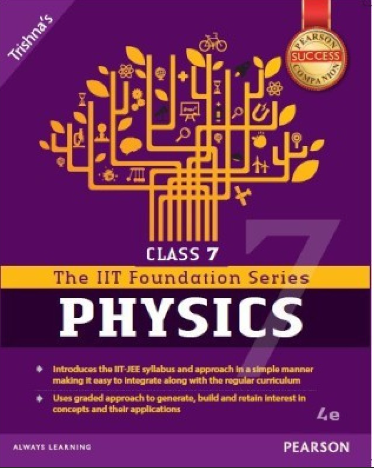
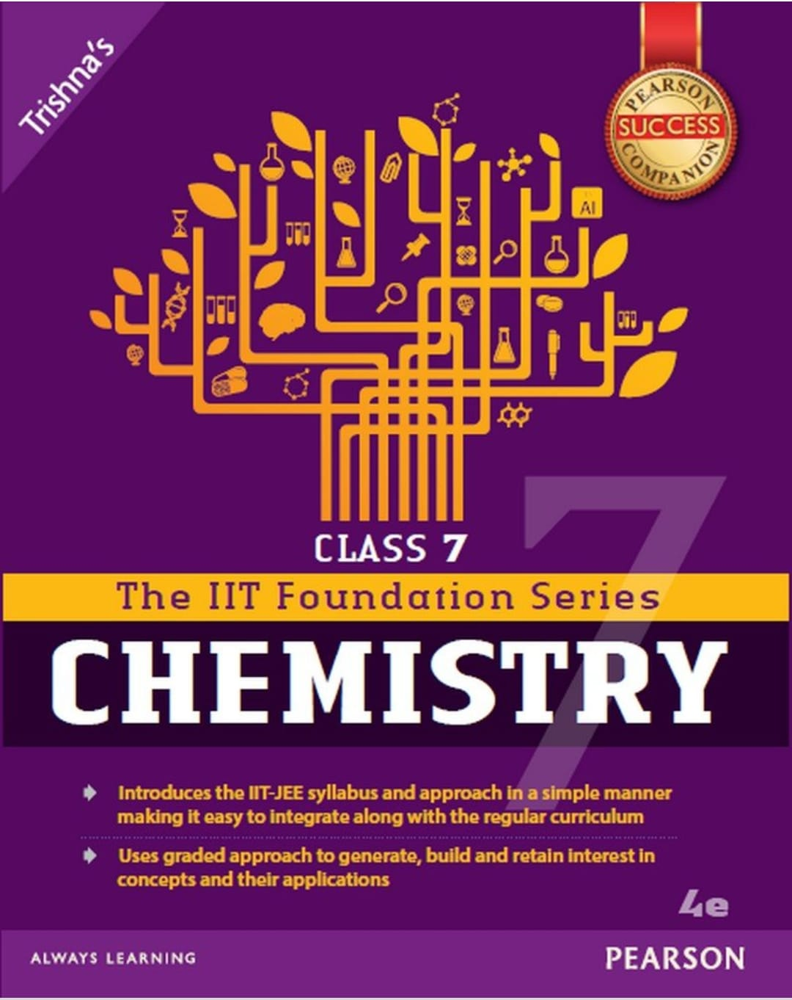
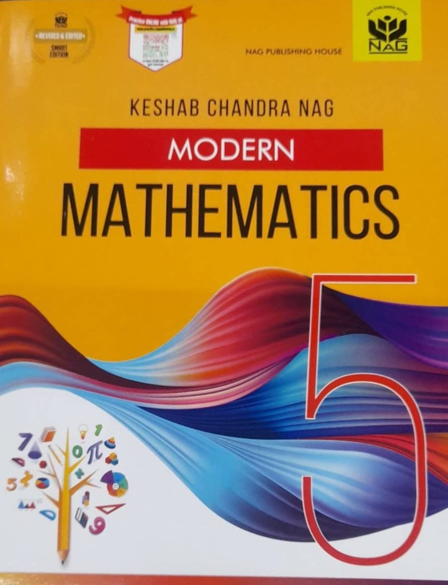
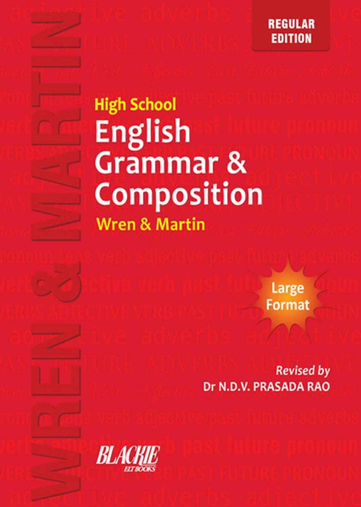

|  |
IIT Foundation Series is the ideal choice of books for a student. It is perfect for a child as it is easy to understand and to learn the subject with more interest. It introduces the IIT - JEE Syllabus in a simple manner thus making it easy to integrate with the regular curriculum. It uses graded approach to generate,build and retain interest in concepts and their applications. Physics Book. |
|  |
IIT Foundation Series is the ideal choice of books for a student. It is perfect for a child as it is easy to understand and to learn the subject with more interest. It introduces the IIT - JEE Syllabus in a simple manner thus making it easy to integrate with the regular curriculum. It uses graded approach to generate,build and retain interest in concepts and their applications. Chemistry Book. |
|  |
Every Student fears by hearing the name "Mathemtics". But Keshab Chandra Nag's Modern Mathematics will make it a lot easier to learn and practice for everyone. The ultimate coward of maths will even fall in love at first sight with the book. It is small,compact, but outstanding for a child. It is also best for compititive and school exams. Sufficient examples and theories help a lot to solve the sums given in the book. Mathematics Book. |
|  |
Wren and Martin's High School English Grammar & Composition is one of the most popular and widely used reference books on English Grammar. It not only helps the students to use the language, but also gives detailed information about the language. It also helps to prepare for compititive exams and regular tests. English Book. |